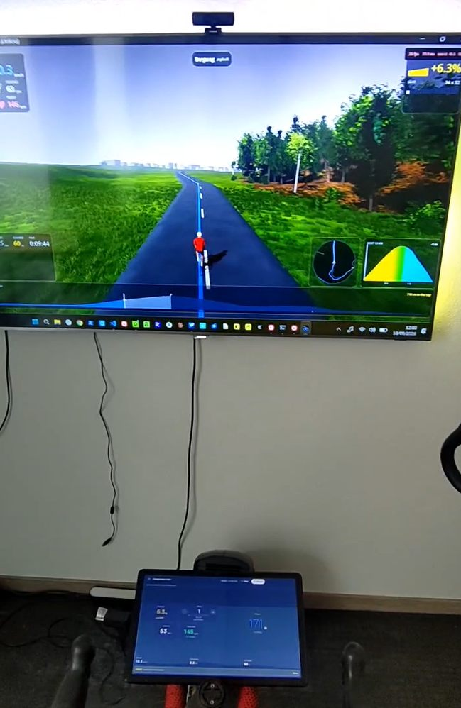

Companion API
Write a game, a route player, a training world, a dashboard - anything with a screen - and let it drive a real ride. Your program decides what road the rider is on. The phone decides what that road feels like.
It is a WebSocket on the local network carrying JSON. There is no cloud service in the middle, no account, no SDK to link, and nothing to sign up for. If your language can open a socket and parse JSON, you can build one.

The whole arrangement, in one photo. On the screen, a companion: it owns the world, decides where the rider is on it, and draws the road. On the tablet at the handlebars, Indoor Bike: it owns the Bluetooth link to the trainer, the gears, and the ride record.
Both are reading 6.3 %, and that agreement is the entire protocol doing its job. The game said what the road was; the phone worked out what that road pushes back with, at that speed, in that gear, and told the trainer.
The big picture
Three things are involved, and each one is good at something the other two are not. The whole design follows from keeping those jobs apart.
The trainer
measures and resists
- Reports power, cadence and sometimes heart rate
- Applies whatever resistance it is told to
- Knows nothing about roads, games or riders
The phone
Indoor Bike
- Owns the Bluetooth link, and is the only thing that talks to the trainer
- Owns the virtual gears and shifting
- Turns a road into a force, and keeps it inside what a trainer will accept
- Records the ride and exports it
The companion
your program
- Owns the world and where the rider is in it
- Decides the gradient under the wheels
- Decides how fast the rider is travelling
- Owns drafting, surfaces, wind, and anything else it invents
Nobody has to trust anybody else with a job they are not equipped for. Your game does not need to learn Bluetooth, FTMS quirks or what a given trainer will refuse. The phone does not need to know what a peloton is.
How the data moves
Four flows, in a loop that closes several times a second. Bluetooth on one side, a WebSocket on the other.
Bluetooth
telemetry, 4 Hz
the world, 4-10 Hz
Bluetooth
Three decisions worth knowing about
The phone commands a force, not a gradient. The obvious design is to pass your gradient straight to the trainer and let its own road model do the rest. That fails twice. On flat ground the gradient is zero, so scaling it by a gear scales zero and shifting does nothing at all. And a trainer's own air-resistance term comes from its flywheel speed, which reflects the one real gear the bike is parked in rather than the virtual gear the rider chose. So the phone runs the road model itself, where the virtual speed is known, and hands the trainer a force.
You own speed; the phone tells you what the legs are producing. Every tick, the phone reports the speed the rider's cadence and chosen gear are turning out. A chain does not slip, so that is not an estimate of their speed, it is their speed, and it is known on the first turn of the crank. Take it, apply whatever your world adds - a draft, a soft surface, a headwind - and send the result back as the speed you want ridden.
Trust is granted once and can be taken back. A stranger presents the pairing code shown on the phone. A companion the rider has paired proves itself with a key instead and connects silently. Either way the phone only listens while the rider has Companion mode open: there is no background service and no permanently open port, which is the most valuable property in the whole design and the reason pairing did not spend it.
The phone never learns where the rider is. It is told a gradient, a speed, and cumulative totals for the ride record. None of those is a position and nothing could reconstruct one. If you later choose to hand over the shape of the course so the ride saves with a map on it, that arrives as a whole road rather than as a location, and it is entirely optional.
Connecting
Finding the phone
The phone opens a WebSocket server when the rider starts a companion ride, and closes it when the ride ends. It is not a background service and not a permanently open port.
The port is ephemeral and different every ride, so never hardcode it. There are three ways to learn it, and the third always works:
-
A UDP beacon on port
47601, the one fixed port in the protocol, because a listener cannot discover the port it is supposed to listen on. A small JSON datagram, once a second while nothing is driving the ride and every five seconds once something is. Easiest path for a game engine, which will have a UDP socket but probably not a DNS-SD library. -
mDNS / DNS-SD, service type
_indoorbike._tcp, with the port in the SRV record. The standard path, and the one that fails silently on guest Wi-Fi, mesh routers and most corporate networks. - Typed in. The pairing screen always shows the address, the port and the pairing code as text. Offer a manual connect form and a rider on a hostile network loses the convenience rather than the feature.
{ "t": "indoorbike.companion", "proto": "0.1-0.2", "path": "/companion",
"port": 47612, "app": "2.1.0", "session": "3f9a1c",
"name": "Indoor Bike", "paired": false }The phone does not put its own address in the payload. The datagram already arrived from an address that is reachable by construction, which is more than can be said for any of the several addresses a phone might nominate. Take the source address of the packet.
The pairing code is deliberately absent from the beacon. Discovery answers which phone; pairing answers may you drive it. Broadcasting the code to the subnet would collapse the two.
The pairing code
Six characters, shown on the phone, fresh for every ride and never reused.
The alphabet leaves out the characters people confuse - no O or
0, no I or 1, no S or
5 - because a rider is typing it off a phone propped on the
handlebars.
The handshake
Open a WebSocket to ws://<address>:<port>/companion
and send hello as the very first frame. Anything else first is
refused as unauthorised.
{ "t": "hello",
"protoMin": "0.1", "protoMax": "0.2",
"token": "8F3K2M",
"client": { "name": "Alpine Climb", "version": "0.3.1", "platform": "windows" },
"role": "controller",
"capabilities": ["summary", "course", "setState"] }{ "t": "welcome",
"proto": "0.2", "app": "2.1.0", "sessionId": "3f9a1c", "tickMs": 250,
"honours": ["gradient", "speedMps", "distanceM", "ascentM"],
"capabilities": ["requestShift", "label", "summary", "course", "setState"],
"role": "controller",
"rider": { "massKg": 78.0, "ftpWatts": 250 },
"bike": { "massKg": 9.5, "drivetrain": "road-double" },
"gears": [ { "i": 0, "ratio": 1.21, "label": "34 x 28", "loadFactor": 0.72 }, ... ],
"gearIndex": 6,
"trainer": { "name": "KICKR CORE", "connected": true, "control": "sim" },
"limits": { "gradient": [-0.3, 0.3], "speedMps": [0.0, 30.0] } }
Three fields in the welcome carry more weight than they look.
honours is what this build actually acts on in
a world frame, which is not the same as what the protocol defines - a field
not listed is ignored and warned about.
capabilities is the same idea for whole frames.
Branch on it rather than on the version number.
gears is the rider's whole drivetrain with real
teeth on it, so you can draw "34 x 17" rather than "gear 11 of 20".
Pairing permanently, so nobody types a code again
The pairing code is per ride. New code, new port, every time. That is the right ceremony for a stranger and the wrong one for the machine in the same room the rider has already trusted twenty times.
Pair once, on both devices, and a companion that finds the phone afterwards connects straight into the ride: no code, no prompt, nothing to tap.
Pairing, once
Send a stable deviceId in your hello, ask
your user whether they want this, then ask the phone:
{ "t": "pairRequest", "name": "Alpine Climb" }The rider is asked on the phone. Agreeing on both devices is the whole ceremony, and what comes back is a key to keep:
{ "t": "paired", "deviceId": "<the app's id>", "name": "Indoor Bike",
"key": "<64 hex chars>" }
Or a pairDeclined, which is not an error.
The ride carries on exactly as it was; offer to ask again next time.
Reconnecting
Send hello with your deviceId and no token. The
app answers with a challenge instead of a welcome:
{ "t": "challenge", "deviceId": "<the app's id>", "nonce": "<32 hex chars>" }
Look up your key for that deviceId, make a
fresh random 16-byte nonce, and answer:
{ "t": "pairProof", "nonce": "<your 32 hex chars>", "proof": "<64 hex chars>" }
proof = hex(HMAC_SHA256(keyBytes,
"indoorbike-companion-v1:companion:" + appNonce + ":" + yourNonce))
The ordinary welcome follows, carrying the app's own proof
over the same two nonces with :app: in place of
:companion:. Verify it. Skipping that leaves
you trusting whatever answered on the expected port, which is the position
pairing exists to get you out of.
A fresh nonce every connection. Both nonces go into both proofs, so reusing yours means signing something only the app chose, which is most of the way back to a recording being useful.
A stored key is not forever. The rider can forget you. Then the handshake comes back unauthorised and the answer is to pair again with the code, not to give up.
Everything is lowercase hex and one HMAC-SHA256, which is in the standard library of every language and engine anyone would reach for. That is deliberate: a key agreement no game engine can implement would protect nobody.
What it does not do
Encrypt anything. The socket is plaintext before and after pairing, so anything already on the network can read the rider's watts either way. Pairing answers who is driving, not who else can see. Encrypting the stream would mean every companion needing TLS with custom certificate pinning, which is awkward in a game engine and would price out exactly the people this API exists for.
Roles
One controller drives the ride. Any number of
observers can watch: they receive everything, and may send
nothing but ping. A second controller is refused while one is
connected.
An absent role means controller. Any value the phone does not
recognise - including the wrong case - grants observer instead, because a
value that cannot be interpreted must not be read as a request for control.
What your companion sends
world - the road, 4 to 10 times a second
The one frame the mode cannot work without.
{ "t": "world", "seq": 412, "gradient": 0.062, "speedMps": 7.42,
"distanceM": 8412.5, "ascentM": 214.0 }| Field | Meaning | |
|---|---|---|
seq | required | Must strictly increase. A frame with a sequence at or below the last is dropped silently, which presents as "the road is frozen" with no error anywhere. |
gradient | required | Rise over run, so 0.06 is a 6 % climb. Clamped to ±0.30. Smooth it before you send it - see Building one. |
speedMps | required | Metres per second along the road surface. Required because the force the phone commands contains an air-resistance term, and a companion that omits it hands the trainer a road with no air in it. |
distanceM | optional | Cumulative total for the ride record, never a per-frame delta and never decreasing. A dropped frame then costs nothing. |
ascentM | optional | The same for climbing. |
requestShift - ask for a gear
Signed steps; positive is harder. Your companion has no shifting logic of its
own: it does not know the drivetrain's ratios or its limits, so it asks, and
the phone answers with a gearChanged event whether or not the
gear actually moved.
{ "t": "requestShift", "steps": -1 }Capped at ten a second. A held gamepad button must not dump the rider into the top gear, and must not kill the connection either, so the surplus is warned about and dropped.
course - the road this ride is on
Optional, and the difference between a ride that lands in the rider's history as a named course with a map on it and one that lands as a column of numbers.
{ "t": "course", "name": "Volcano Circuit", "world": "Watopia",
"distanceM": 12400, "ascentM": 180,
"shape": "_p~iF~ps|U_ulLnnqC...", "profile": [412, 418, 431, 447] }A route ride in the app can keep a thin record because its route is not thin: the session names a course in the app's own catalogue and everything downstream fetches it back. Your course exists nowhere the app can reach, so it travels with the ride instead.
Send it whenever you like, as often as you like - fields merge. A later frame that leaves a field out keeps whatever was already known. So the usual shape is a name early, while the ride is happening and the phone's display can show it, and the shape at the end, which is the only order a free-roaming world can manage: you do not know what road the rider took until they have taken it.
| Field | Meaning |
|---|---|
name | What to call the ride. Becomes the saved session's name. |
world | The game or world it was in, shown beside the name. |
distanceM | The course's own length. Not how far the rider got - that is world.distanceM. |
ascentM | The course's own total climb. |
shape | The road as a precision-5 encoded polyline, the format every mapping library already speaks. Up to 32 768 characters. |
profile | Elevation in whole metres, evenly spaced along the shape. 64 samples is plenty. Up to 1 024. |
Everything here describes the course, never where on it the rider is. A companion that would rather disclose nothing sends none of it, and the ride saves exactly as it would have: real numbers, no map.
An over-long shape or profile is refused whole rather than truncated, with a warning saying so. Half a polyline is not a shorter road, it is one that leaves the map.
setState - start, pause and resume the recording
{ "t": "setState", "state": "paused" }
This is also how a ride starts. The app prepares the ride
the moment you connect and begins streaming telemetry and applying the
road immediately, but the clock does not run and nothing is written down
until "active" arrives. Send it when your world says the ride
has begun: past the menus, off the start line, whenever that is for you.
Until then a rider can spin up freely and none of it lands in their ride
record.
There is deliberately no countdown. Your game has its own idea of when a ride begins and the app cannot see it, so it does not count anybody in. The phone shows "Ready, start the ride in the game" while it waits.
Forget this and nothing is ever recorded. The rider pedals, the road works, the trainer responds, and the ride saves nothing. It is the easiest way to ship a companion that looks right and keeps no rides.
If your world has a pause - a menu, a loading screen, a rider who stopped -
use this, or the ride record quietly accumulates minutes of zeroes that
nobody rode. state is "active" or
"paused"; anything else is refused rather than guessed at,
because reading a misspelling as "paused" would silently stop recording a
ride the rider is still doing.
This does not stop the deadman. Keep sending
world frames while you are paused, or the gradient ramps to
flat under a rider who may still be turning the pedals.
It is a request rather than a command, and it can legitimately do nothing: a
ride that has not started cannot be paused. The stateChanged
event is the answer, and it arrives for pauses you did not ask for too.
drivetrain - put the rider on your bike
Optional, and most companions should leave it alone. Without it the rider rides the drivetrain they chose in the app's settings, which is a reasonable bike and the one they picked. Send this when the game has an opinion: a mountain stage that hands out a 32-tooth granny ring, a track session on a fixed gear, a bike the rider unlocked.
{ "t": "drivetrain", "name": "Race bike",
"chainrings": [50, 34],
"sprockets": [11, 12, 13, 14, 15, 17, 19, 21, 23, 25, 28, 32],
"wheelCircumferenceMm": 2105 }| Field | Meaning |
|---|---|
chainrings | Teeth. One to three of them, each 20 to 70. Order does not matter. |
sprockets | Teeth on the cassette. One to sixteen, each 9 to 60. One sprocket is a single-speed, which is a real bike. |
wheelCircumferenceMm | Rolling circumference with the tyre on. Absent means 2105, a 700x25. |
name | What to call it on the phone. Absent builds one from the teeth. |
1x, 2x and 3x is the length of chainrings.
There is no separate field saying which, because a field like that can
disagree with the list beside it and then somebody has to decide which one
is lying.
An invalid bike is refused whole, not repaired. A drivetrain describes a physical object, so a zero-tooth sprocket is a bug rather than a preference: rounding it up quietly would hide the bug and hand the rider a bike nobody designed. You get a warning naming the offending number, and the rider keeps the bike they had.
The ladder you get back is shorter than the list you sent.
Combinations within 2.5 % of one already in the ladder are dropped, so
a 2x with fifty-odd pairings comes back as about twenty distinct gears.
The app answers with a drivetrainChanged event carrying the
whole resulting ladder and the gear the rider is now in. Draw your gear
display from that, not from what you sent.
Send it during setup, before setState: "active". Nothing is
persisted: the rider's own setting is untouched underneath and comes back
when the ride ends.
controls - lend the rider your phone
Your game is on a television across the room. The rider is on a bike, with a phone on the bars and no keyboard. When you put a menu up, they have no way to answer it.
{ "t": "controls", "visible": true,
"title": "Choose a route", "hint": "Pick a lap count",
"enabled": ["up", "down", "enter", "back"] }
While visible is true the app draws a control pad on the
phone, and every press comes back as a controlPressed event
naming one of up, down, left,
right, enter, back.
| Field | Meaning |
|---|---|
visible | Whether a controllable screen is up. When false, everything else is ignored. |
title | What the screen is. Shown above the pad, trimmed to 48 characters. |
hint | One line of help under the title. Same limit. |
enabled | Which controls will actually answer. Absent or empty is legitimate for a loading state. |
enabled is the part that matters. The app is
driving a screen it cannot see. It has no idea whether what is up is a list
of four things, a yes/no dialog, or a loading state that ignores
everything, so controls you do not list are drawn visibly dead
rather than hidden. A rider must never press something that looks
live and get nothing, and the pad must not reshuffle under a thumb already
moving toward a button.
Send a fresh frame whenever selectability changes; the last one wins. Send
visible: false when the menu closes, or the rider is left
holding a remote wired to nothing. The pad is taken away automatically if
you disconnect. An unrecognised control name is refused with a warning
naming it, and the rest of the frame still lands.
Nothing here reaches the trainer, the physics or the ride record. It is a remote control that happens to share a socket with a bicycle.
label, finish and ping
label names the ride, which course also does - send
either. finish ends it: companion mode has no route of its own,
so nothing but you can know when the ride is over. ping is
answered with pong and is usually unnecessary, since the
WebSocket has its own.
{ "t": "label", "name": "Stelvio, north side", "world": "Alpine Tour" }
{ "t": "finish" }
{ "t": "ping", "id": 17 }What the phone sends back
telemetry - every 250 ms
Pushed to every connection that has completed a handshake, controllers and observers alike, at the rate the welcome named. Interpolate for rendering rather than asking for more: the physics only moves four times a second, and a faster stream would be inventing data.
{ "t": "telemetry", "seq": 1043, "tMono": 128500, "state": "active",
"power": 243, "cadence": 88, "hr": 152, "speedMps": 8.33,
"gearIndex": 11, "loadFactor": 1.18,
"appliedGradient": 0.062,
"trainerForceN": 96.4, "trainerGradePercent": 11.7,
"elapsedS": 512 }| Field | Meaning |
|---|---|
seq, tMono | A counter that increments by one, and milliseconds since the ride started. A gap in the counter means frames were lost. |
state | listening, active, paused or finished. |
power, cadence, hr | From the trainer and the strap. Omitted when there is no reading, never sent as zero. |
speedMps | The speed the rider's legs and gear are turning out. Use this as the bike's speed. Omitted when the trainer cannot report cadence. |
gearIndex, loadFactor | Which gear, and how much of the road's force it asks the rider to carry. |
appliedGradient | The gradient actually in use, after clamping and the deadman. Trust it over your own value for anything you show the rider. |
trainerForceN | Newtons at the wheel, after the gear and the safety ceiling. |
trainerGradePercent | The grade actually written over Bluetooth. It differs from appliedGradient because it encodes a force against an assumed 84 kg. It is not a gradient. Do not display it as one. |
The last two look like internals and are published on purpose. They are literally what the machine was asked for, and without them nobody building against this can tell a protocol bug from an honest disagreement about physics.
A word about speedMps
This is the single most common way a new companion feels broken. A chain does not slip, so cadence multiplied by the gear's development is the rider's speed, and it is known the moment the crank turns. If you integrate a speed out of power instead, you are modelling a bicycle accelerating from a standstill, and what the rider sees is watts and cadence arriving from the trainer while the speed sits at zero for five to ten seconds - at the start of a course, and again every time they stop and start.
Take it, apply your world's own effects, send the result back. The two agree wherever the rider is settled and are meant to disagree everywhere else. Only when the field is absent should you fall back to your own model.
event - things that cannot wait for the next tick
| Event | Meaning |
|---|---|
gearChanged | Carries the new index, whether it actually changed, and the source - your request, the on-screen shifter, or the rider's handlebar buttons. changed: false means they are out of gears. |
drivetrainChanged | The bike changed. Carries the whole resulting gears ladder and, in index, the gear the rider is now in. Only sent if you send a drivetrain. |
controlPressed | The rider pressed one of the controls you offered. Carries control. Only ever sent for a control you listed as enabled, and only while a screen is up. |
stateChanged | The ride started, paused, resumed or finished - whoever caused it. The rider has their own pause button and the phone has a stop-pedalling watchdog, so follow this rather than assuming your own request took effect. |
worldTimeout | Your frames stopped arriving and the road is being ramped away. Treat it as a bug report about your own frame loop. |
worldResumed | They started again. |
controlRevoked | The rider took the ride back. The recording continues without you. |
warning - non-fatal, and worth reading
Surface these in development builds. They are the difference between "drafting does not work" and "this build ignores that field".
| Code | Meaning |
|---|---|
fieldNotHonoured | You sent something this build does not act on. Check welcome.honours. Sent once per field, not once per frame. |
clamped | A value was outside the envelope and was held at the edge. Carries what you sent and what was applied. |
rateLimited | Too many shift requests. The surplus was dropped. |
rejected | A value was dropped rather than trimmed, because trimming it would have been worse than dropping it. |
Rates, the deadman, and failure
Rates
| What | Rate | Note |
|---|---|---|
world out | 4 - 10 Hz | On a fixed timer, not once per rendered frame. A 144 Hz game must not send 144 Hz. |
telemetry in | 250 ms | Read it from welcome.tickMs; do not hardcode it. |
requestShift | max 10/s | Surplus warned and dropped, never an error. |
course | whenever | Merged field by field. Once at the start and once at the end is the usual shape. |
The deadman
If your world frames stop for 1.5 seconds, the
phone ramps the gradient to flat over the next two seconds and tells you it
is doing so. Speed is held rather than zeroed, so the rider lands on
an ordinary flat road at their current pace rather than against nothing.
This fires on a loading screen, an alt-tab that pauses your main loop, a
garbage-collection stall, or a menu. Keep sending
world whenever the rider could still be pedalling, even
if your world is paused - send the current gradient and a speed of zero
rather than nothing at all.
When something goes wrong
A fatal failure sends an error frame and closes with a
code and a reason. Both, always: a client that fails version negotiation may
close the socket before it processes the frame, and then the close reason is
the only thing it ever sees.
| Close | Why |
|---|---|
4001 | No protocol version both ends speak. The message names both ranges and which end to update. |
4002 | Wrong or missing pairing code, or a first frame that was not hello. |
4003 | Another companion is already driving. Connect as an observer, or disconnect the other one. |
4004 | The rider took control back. |
4005 | The ride ended. |
4008 | A frame could not be read. |
Versioning, and how this grows without breaking you
You declare a range in hello; the phone picks the highest version
both ends speak and states it in welcome. Check it
against your own range - the phone may legitimately choose a version
you listed but have since dropped, and a client that trusts the welcome
blindly fails somewhere far less legible.
Four tolerance rules, in both directions, and they are not optional:
- Ignore unknown fields. Never an error.
- Ignore unknown frame types. Keep the socket open.
- Tolerate unknown enum values. Fall back to a documented default.
- Never silently drop something meaningful. The phone warns once per unhonoured field; do the equivalent.
These are what let a companion written today share a socket with a phone shipped next year. Breaking them is the most common way a companion becomes fragile.
Building one
The order that works
- Connect and handshake. Manual address, port and code entry first. Discovery can wait; nothing works until the handshake does.
- Render telemetry. Prove the socket both ways before driving anything: show power, cadence, heart rate and gear.
- Send a flat road.
gradient: 0.0and the speed from telemetry. The trainer should feel like flat ground. If it does not, stop and fix it here. - Add terrain. Now the gradient comes from your world.
- Add gears. Draw the display from
welcome.gears, wire up shift requests, handlechanged: false. - Add discovery.
- Add
course,setStateandfinish, which are what make the ride land in the rider's history looking like a ride.
Do not start at step four. A companion that renders a mountain before it has proven a flat road has two untested systems and no way to tell which one is wrong.
The mistakes that cost the most time
| Mistake | What you see |
|---|---|
Never sending setState: "active" | The rider pedals, the road works, and nothing is ever recorded |
Leaving controls visible after a menu closes | The rider is left holding a pad wired to nothing |
Integrating speed from power instead of using telemetry.speedMps | Speed sits at zero for 5-10 seconds every time the rider starts pedalling |
| Sending a gradient straight off a route file | The trainer lurches at a steady rhythm on ground that looks smooth |
seq that does not increase | Frames dropped silently; the road appears frozen with no error anywhere |
Sending deltas in distanceM | Distance stalls, because a smaller value than the last is ignored |
| Hardcoding the port | Works on the ride you tested, fails on every other one |
Defaulting a missing hr or speedMps to zero | A heart rate of zero on the HUD; a rider stopped dead on a trainer that cannot count cadence |
Treating trainerGradePercent as a gradient | An 11 % reading on a 6 % hill. It is a force against an assumed mass |
The light feeling at the start of a ride
Worth knowing before you go looking for it in your own code: the app helps riders off the line, and it is not honouring your gradient any differently while it does.
Pulling away from a standstill is genuinely hard. At walking pace almost none of the resistance is air, so what is left is gravity, rolling, and the mass of the bike and rider being accelerated. Power is force times speed, so at 2 km/h the power is trivial while the force at the pedals is not: the rider gets a heavy, grinding pedal and no reward for it. Outdoors the answer is to stand up for three strokes. Indoors, seated, with no scenery moving yet, it reads as the app being broken.
So for the first few seconds the app commands about half the real force,
then fades to full physics over ten seconds once the rider passes 5 km/h.
A ride that feels light at the start and normal thereafter is this, not
your world. telemetry.appliedGradient will confirm your
gradient arrived intact.
Smoothing the gradient
This one deserves its own note, because a route file does not give you a usable gradient and nothing on the phone will save you: the gradient you send goes into the force on the rider's legs almost unaltered.
Differencing consecutive altitudes gives a step function. Measured on a real 6.7 km GPX resampled every ten metres, the worst jump between two neighbouring samples was 13.4 percentage points - nearly half the range from flat to the 30 % ceiling, arriving in one go, once every ten metres of road.
There are two smoothing steps and the first does most of the work. Resample the elevation onto a fixed grid, smooth the elevation itself over about ±50 m, and only then take a centred difference over about 40 m. On the same route that takes the worst jump from 13.4 points to 3.0 with the difference alone, and to 0.6 with both. Three points is still a 25 N kick, which is why the elevation smoother is not the optional half.
Do it once, where the route is prepared, and read it back at ride time. Deriving it twice with slightly different arithmetic - once for the trainer, once for whatever you draw - shows up as resistance that disagrees with the number on the screen.
Building one with an agent
There is a packaged skill for this. It is written to be read by a coding agent, and it carries the things that are obvious only after you have got them wrong: the exhaustive frame-by-frame reference, the ownership rules, the rates, the deadman, the failure modes, a worked transcript of a whole ride, and a checklist.
It is meant to be copied out of the repository wholesale. Nothing in it depends on this app's source.
Install it
git clone --depth 1 https://codefloe.com/SnappTechnology/IndoorCyclingApp.git indoorbike-src
mkdir -p .claude/skills
cp -r indoorbike-src/skills/indoorbike-companion .claude/skills/cp -r indoorbike-src/skills/indoorbike-companion ~/.claude/skills/
On Windows the paths are .claude\skills and
%USERPROFILE%\.claude\skills; the copy is the same. Other
agent tools have their own place for this - the skill is plain Markdown and
does not care.
Then ask for what you want built. The skill is invoked by name, or picked up automatically when the task is about driving an Indoor Bike ride.
What is in it
| File | Contents |
|---|---|
SKILL.md | The rules that prevent most bugs, the order of work, rates, the deadman, and how to debug a connection that will not behave. |
references/protocol.md | Normative frame-by-frame reference. Every field, type, unit, clamp and close code, with a worked transcript and an implementation checklist. |
references/godot.md | Godot specifics: the UDP beacon, the WebSocket peer, and the loop shape. |
If your agent cannot clone, point it at the files directly - they are plain Markdown and fetchable:
Where the rest lives
This page is the human explanation. Two documents in the repository go further: the specification with the reasoning behind every decision, and the original design argument that produced the split between the phone and the companion in the first place.
Licensing
The Indoor Bike app is GPLv3, and its source is linked above. What is described on this page is a wire format: your companion is a separate program that opens a socket and exchanges JSON with it, and it links none of the app's code. The specification and the skill are published to be read, copied and implemented - that is what they are for.
If you are building something commercial and want the licensing position in writing rather than inferred from a web page, ask. It is a reasonable thing to want and it is better answered directly than guessed at.